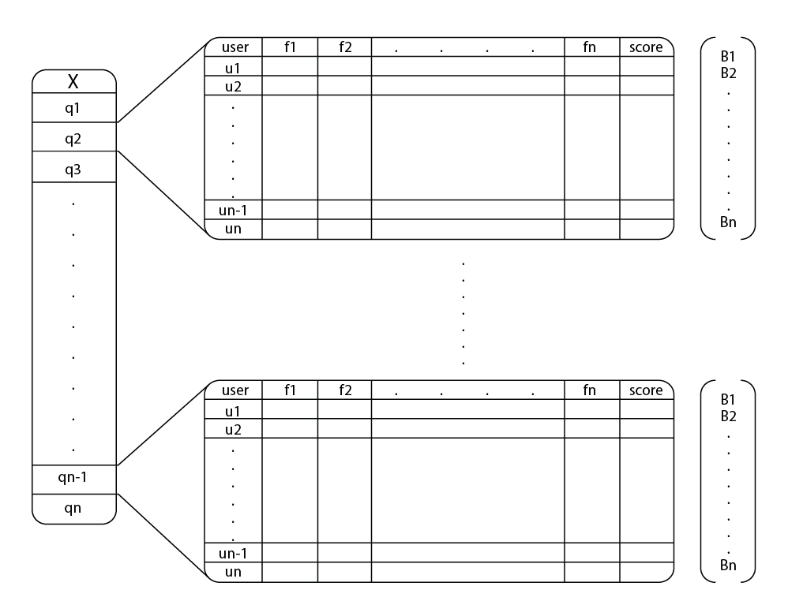
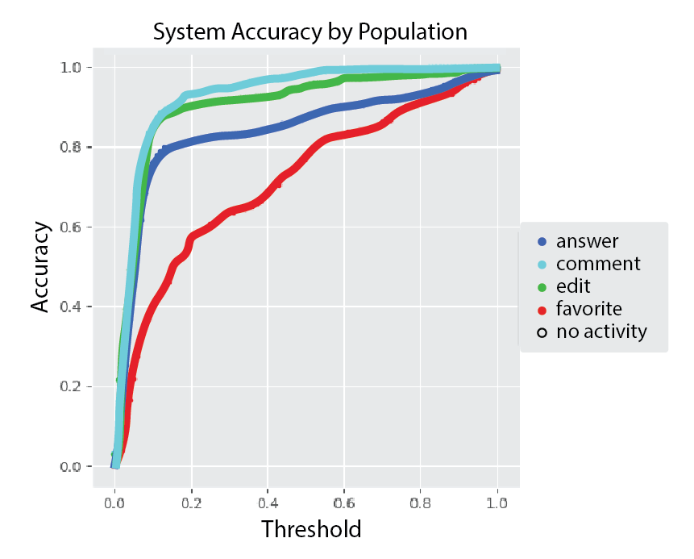
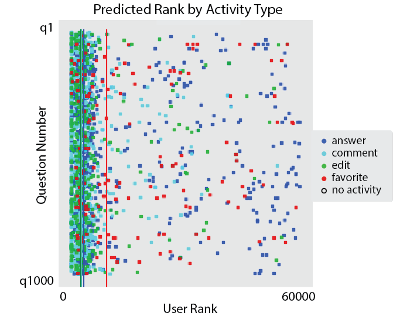
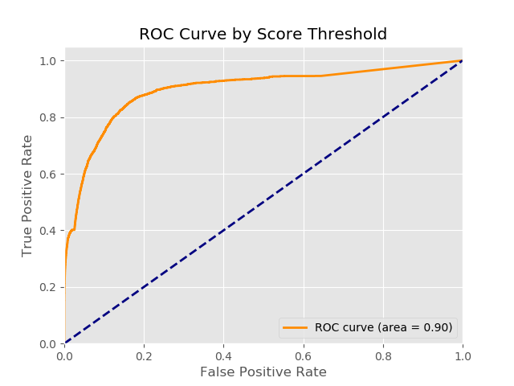
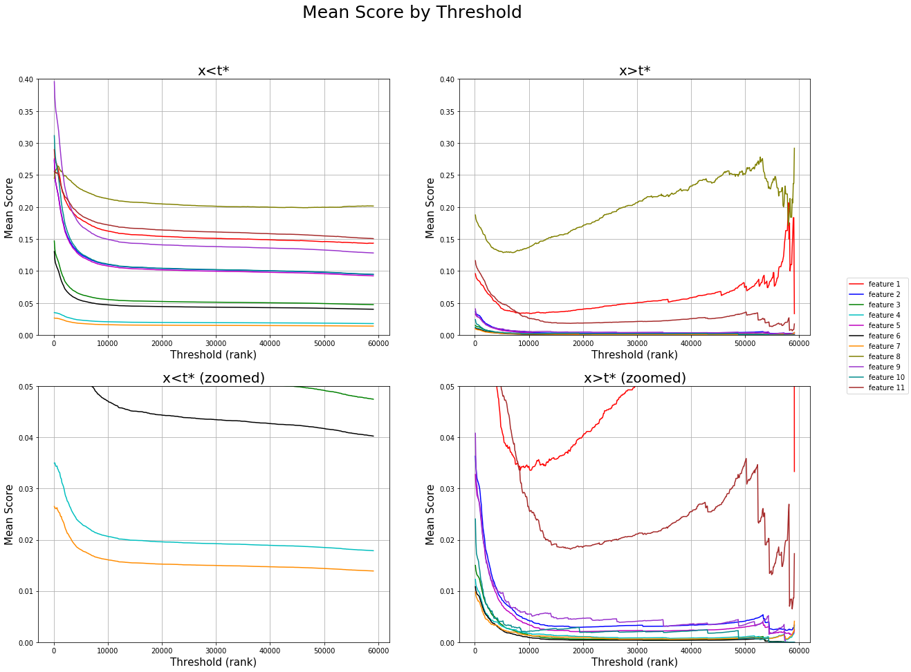

Executive Summary
Community question and answer services (CQA) like the Stack Exchange platform enable users to crowd source knowledge in the form of questions and answers. Thousands of new questions are posted each day, but approximately 22\% of non-closed questions remain unanswered, and 72\% do not receive an accepted answer. With a large volume of incomplete answers, new questions generated everyday and considerable interest in users to become able to identify these questions \cite{value, soquestions}, it can be useful to route questions to potential answers at a user's convenience and interest. In this paper, we present a user-question routing scheme that is focused on the context of unanswered questions. Our experiments show that by selectively targeting 15\% of a user population, we can expect to capture 90\% of the activities in unanswered questions in the form of answering, commenting or editing. We also show that this can be achieved through a simple selection of engineered features.
Stack Overflow Data Set
Data from Stack Overflow is publicly available on archive.org \cite{data}. We decided to subset on Java related questions in the months of January to June of the year 2012. This decision was made for two key reasons. First, due to Java’s versatility, the language contains a large ecosystem of questions that already comprises a large subset of programming related topics. Secondly, due to the questions being 6 years old at the time of query, responses to these questions have stabilized in terms of obtaining new responses.
Recommender System
We define our loss as the inverse ratio of observed activities within a chosen threshold ($t^*$) of the user population. In other words, given a limited number of users to choose from, we are interested in maximizing the identification of individuals who have responded to a question. This loss function reflects the philosophy that there are many users who are equally qualified in answering a question. We are more interested in adequately identifying these users, than quantifying a measurable metric that distinguishes one user better than the other.
Model Features
- Indicator Variables: Utilizing a users history, our model applies two features as indicators. The first identifies whether a user created an account after the question was posted, and the second identifies whether the user was inactive before a question was made.
- User Availability (Feature 1): the probability at which a user is available to answer.
- User Expertise (Feature 2-4): The level of experience of a user to a particular tag. Under this category, there are three sub-feature, which are the frequency of comments, questions and answers in relation to the tags of a question.
- User Tag Similarity Expertise (Feature 5-7): The similarity of a tag and another tag for which a user who is experienced in such tag.
- Question Familiarity (Feature 8-11): The level of familiarity with the content of a question to a user based on his/her historical record.
Loss Function
We define our loss as the inverse ratio of observed activities within a chosen threshold ($t^*$) of the user population. In other words, given a limited number of users to choose from, we are interested in maximizing the identification of individuals who have responded to a question. This loss function reflects the philosophy that there are many users who are equally qualified in answering a question. We are more interested in adequately identifying these users, than quantifying a measurable metric that distinguishes one user better than the other.
Results
stuff
stuff
stuff
Residual Analysis
To study the characteristics between the classified group 0 < x < t* (A), against misclassified user group t** < x < 60000 (B), we look over features that dominated the overall scores of the user with respect to the kind of user activity. Moreover, we wanted to identify how the distributions in group B compared when lined up against group A.
In the figure above, what is immediately obvious is that there are 3 key features that dominate the overall feature score. These are features user availability, user expertise (by answers), and question familiarity (by question title). This plot helps us identity which features are important in terms of accurate classification in our model. Interestingly, each of these features will uniquely map to their own respective groups.
Another observation that is common between both groups is that a exponentially decaying feature mean by ascending rank. This is to be expected, as a the system naturally accepts a few individuals who are a good match for a particular question, and more individuals who are more or less are on the same playing field. In other words, this plot highlights the cluster of individuals spread across x < t* as shown in the figure, and more or less uniform spread of individuals spread across x > t*. Another conclusion is titles from questions are more powerful indicators in terms being capable to summarizing a user coherency to a question. This makes sense because questions naturally produce the most important elements of a text.
Conclusions
With a threshold of t*=.15 (which accounts for 10063 out of 59196 total users), the system is able to capture 91.5416% of observed activities for all questions. Breaking this down even further, from the identified 4292 total user activities derived from 1000 random questions, a threshold of .15 would correctly identify 3928 observed activities and misidentify 364. The remaining 5771 users, did not contribute to these 1000 questions in terms of comments, answering, or editing.
One question that is worth considering is whether or not it is fair to contact the users who have no activity to a question but were classified as such (false positives). One argument is that because all users were ranked, the users who were correctly classified are a best approximated by those who did not. In other words, if we were to cluster the users under t* <= .15, using the same features to classify them, the users who actively contributed and those that did not would identify into the same cluster group.
Future Directions
As stated before, the information gained in each features have been chosen to be limited to the context of an unanswered question. However, if there is interest to also target question with answers, such as questions without an accepted answer, we recommend taking in account user compatibility as a feature. This feature would measure the degree of similarity between the users who have answered against all remaining users. Similarly, user co-occurrences between questions could also be taken into account.
Defining user expertise to be proportional to the frequency of posts as we have done is a naive way of measuring expertise in a topical area. To improve this, we recommend further subsetting on features such as length of response, or the number of upvotes associated under a particular post.
For the first feature - user availability, rather the observing the global history of activities for a given user as we have done, in a real system, we recommend observing user activity for the last few months, in order to maintain dynamic scheduling.
"All models are wrong but some are useful."
George Box (1976)